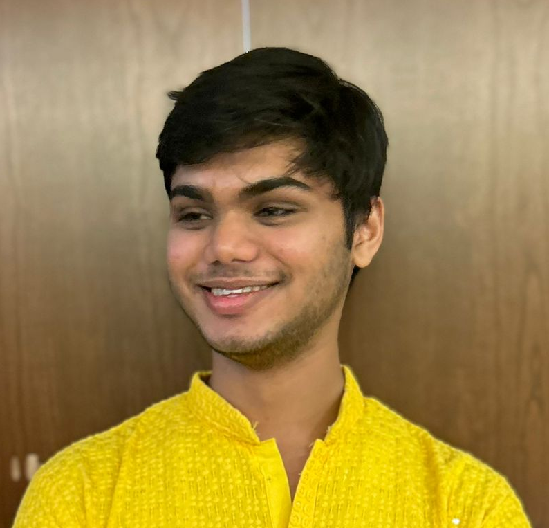

About Us

Arnav Mohakud
Hi! My name is Arnav Mohakud. I am a senior doing a Computer Science major, and minors in Data Science and Mathematics. I am interested in learning about the social background behind the tech scene, and its history and development. I want to understand the biases that both I as well as other people hold, and how we can improve awareness and equity in technology and information work.
Siddhanth Pandey
I'm a computer science student interested in both building technology and understanding its social impact. In LIS 500: Code and Power, I'm exploring how societal factors like bias, labor, and access shape computing, and how computing, in turn, affects society. I'm excited to examine the human side of technology alongside the technical.